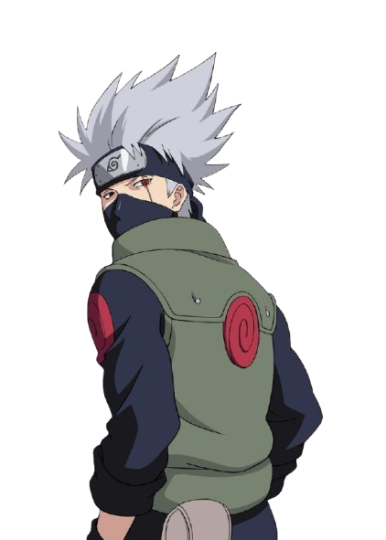
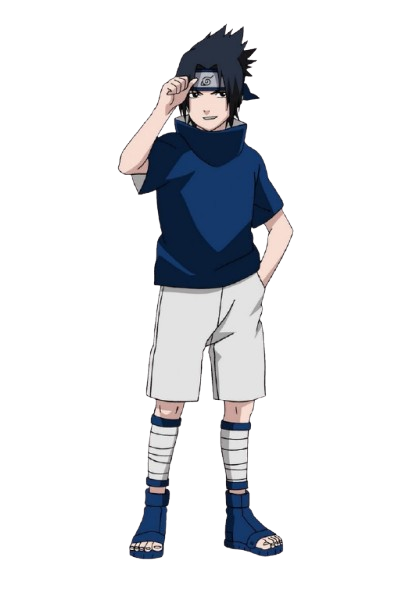

Kakashi Hatake (旗木カカシ) é um dos personagens mais icônicos da série Naruto. Conhecido por seu comportamento calmo e misterioso, ele é o líder do Time 7, composto por Naruto Uzumaki, Sasuke Uchiha e Sakura Haruno. Kakashi é um ninja extremamente habilidoso, famoso por seu Sharingan e por ser um dos ninjas mais talentosos de sua geração. Ao longo da série, ele desempenha um papel crucial como mentor e protetor de seus alunos, transmitindo valiosas lições sobre amizade, responsabilidade e sacrifício.

Sakura Haruno (春野サクラ) é uma jovem kunoichi de Konohagakure e membro do Time 7, junto com Naruto Uzumaki e Sasuke Uchiha, liderados por Kakashi Hatake. Durante o Naruto Clássico, ela é conhecida por sua inteligência, habilidade em estratégias e seu afeto por Sasuke. Apesar de sua falta de experiência em combate no início, Sakura demonstra potencial e determinação ao enfrentar os desafios que surgem, enquanto busca crescer como ninja e apoiar seus companheiros de equipe.

Naruto Uzumaki (うずまきナルト) é o protagonista da série Naruto. Um jovem ninja com o sonho de se tornar Hokage, o líder de sua vila, para ganhar o reconhecimento de todos. Desde pequeno, ele é rejeitado pelos moradores de Konohagakure devido à presença da Raposa de Nove Caudas selada dentro dele. Determinado a superar essa adversidade, Naruto é conhecido por sua coragem, perseverança e um coração generoso. Com o tempo, ele conquista amizades valiosas e se torna um dos ninjas mais poderosos de sua geração, sempre em busca de proteger seus amigos e alcançar seu sonho.

Sasuke Uchiha (うちはサスケ) é um dos personagens principais de Naruto. Membro do renomado clã Uchiha, ele é um prodígio desde jovem, conhecido por suas habilidades excepcionais e seu desejo de vingança contra seu irmão, Itachi Uchiha, que destruiu seu clã. Inicialmente, Sasuke é parte do Time 7, mas sua busca por poder o leva a se afastar de Konohagakure e seguir um caminho solitário. Ao longo da série, Sasuke luta com seus próprios demônios internos, tentando equilibrar seu desejo de vingança com os laços que forma com seus amigos, especialmente Naruto e Sakura.